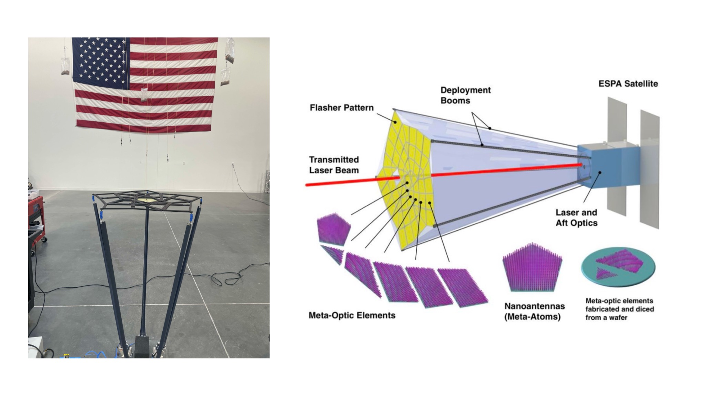

Metalens Origami Deployable LiDAR Telescope (MODeL-T)
NASA Goddard Space Flight Center, BYU, Penn State, MMA Space
 My graduate research has focused on designing the architecture and components of a deployable LiDAR telescope intended for use on a SmallSat. This includes integrating an optomechanical origami array with carbon fiber deployment booms, which are pictured above in their fully deployed state during a gravity offload test.
Deep Learning with Physics-Based Applications
ME EN 595R
In a graduate level deep learning course, I gained experience applying novel neural network architectures to engineering problems. This included using Physics-Informed Neural Nets, Neural ODEs, Convolutional NNs, Encoders & Decoders, Neural Koopman Operators, Graph Networks, Learned Symbolic Regression, Kolmogorov Arnold Networks, and more. I learned how to design neural networks that make predictions constrained by physical laws such as the Navier-Stokes equations (pictured above).
Systems Engineering and CAD Applications
ME EN 578
Agent Based Model: “UAV Swarm – Reconnaissance and Target Elimination”
This model’s purpose is to explore the interaction between autonomous agents and potentially create a domain for emergent behavior to be observed. There are two classes of agents—UAVs and targets. The targets move at random until they are observed, in which case they speed up and attempt to get away. The UAVs have a circular range of observability- a “halo”- that allows them to communicate with other UAVs, and within which allows them to see targets. The UAVs follow an objective function that guides their movement to maximize the number of targets within their halo. If a target remains in a halo for a certain period of time it will be eliminated. If a target evades halos for a certain period of time it will spawn another target.Flight Vehicle Design
ME EN 415
I built foundational knowledge in aircraft and rocket design, covering aerodynamics, structures, stability, propulsion, and performance, with a focus on multidisciplinary tradeoffs. I utilized theoretical concepts, analytic methods, and computational tools like XFLR5, a CFD analysis tool for airfoils, wings, and planes at low Reynolds numbers. For the final project, I designed and built a glider, iterating through foam, metal, and plastic shrink-wrap prototypes to test and refine weight, structural integrity, and aerodynamic performance.
Design of Controls Systems
ME EN - EC EN 483
 I developed skills in classical frequency response and time-domain design of control systems, as well as state variable control. I gained the ability to use the Final Value Theorem to predict steady-state behavior and modeled dynamic systems using differential equations, transfer functions, and state-space equations in Python. Using state-space techniques, I designed feedback systems and simulated dynamics and controllers with modern programming languages. During lab sessions, I applied these concepts by implementing control systems on a physical eVTOL "Hummingbird" system.
I developed skills in classical frequency response and time-domain design of control systems, as well as state variable control. I gained the ability to use the Final Value Theorem to predict steady-state behavior and modeled dynamic systems using differential equations, transfer functions, and state-space equations in Python. Using state-space techniques, I designed feedback systems and simulated dynamics and controllers with modern programming languages. During lab sessions, I applied these concepts by implementing control systems on a physical eVTOL "Hummingbird" system.
Kinematics
ME EN 437
I studied the motion of mechanical systems, focusing on the dynamics, velocities, and accelerations of links, as well as non-linkage mechanisms like cams and gears. I gained expertise in analyzing and synthesizing mechanisms, using Python to calculate positions and optimize designs. I simulated systems in SolidWorks to evaluate performance before prototyping. For my final project, I designed and built an animatronic red-tailed hawk, utilizing 3D-printed linkages, gears, and metal ball bearings to demonstrate the practical application of kinematics.
Plastics and Composites Manufacturing
MFGEN 355
I studied methods for manufacturing products from plastics and composites (injection molding, rotomolding, vacuum forming, prepreg CF, forged CF, etc.). In the video above I create a deployable origami array by milling out 8 pre-stiffened CF panels and then connected them with a dry weave. I carefully used resin where I wanted stiffness, and used a mold release on the carbon fiber "hinges" where I wanted flexibility. Machined aluminum bars clamped down on the hinge locations during the vacuum curing process to keep resin from seeping in.
Hands-On Fabrication Skills
Machining, Sheet Metal, Composites, 3D Printing
I routinely practice hands-on fabrication skills, including machining, sheet metal work, composites, and 3D printing. I have experience with CNC mills, lathes, laser cutters, water jets, and 3D printers. I have also worked with a variety of materials, including metals (aluminum, steel), plastics (acrylic, PLA), and composites (carbon fiber). I have used Solidworks and Catiav5 CAD softwares to design parts and assemblies for manufacturing with detailed part drawings.Design of Mechatronic Systems
ME EN 330
I designed and implemented microcontroller-based mechatronic systems by integrating mechanical, electrical, and software subsystems. I developed proficiency in microcontroller architectures, programming, and interfacing with digital and analog circuits, sensors, and actuators. Using tools like PCB design software and mechanical prototyping equipment, I applied principles of analog-to-digital conversion, pulse-width modulation, and serial communication. For my final project, I created a robot featuring IR and color detection sensors, stepper motors for locomotion, a sorting mechanism for black and white ping pong balls, and an aiming/launching system to shoot the balls into specific targets.